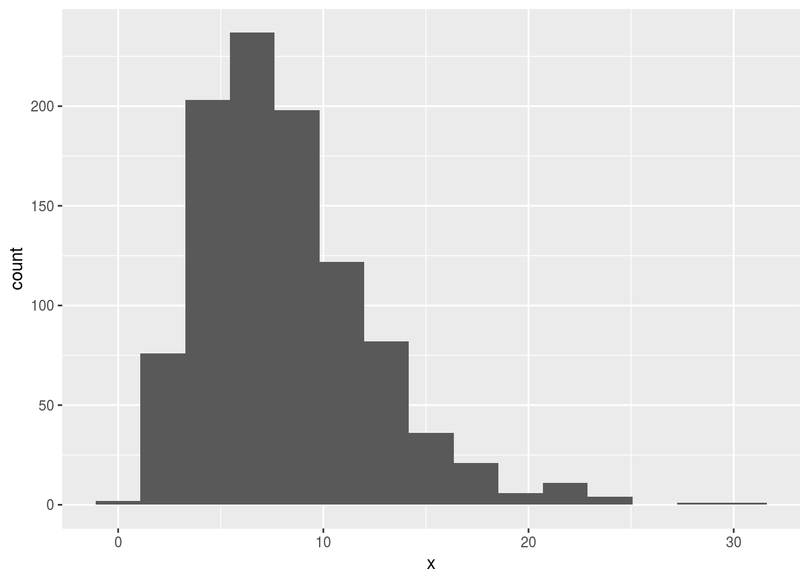

Simulation, the tidy way
Packages
I’m using this, and also doing some random number generation, which I’d like to be reproducible:
library(tidyverse)## ── Attaching packages ────────────────────────────────────────────────────────────────────────────────────── tidyverse 1.2.1 ──## ✔ ggplot2 2.2.1.9000 ✔ purrr 0.2.4
## ✔ tibble 1.4.2 ✔ dplyr 0.7.4
## ✔ tidyr 0.8.0 ✔ stringr 1.3.0
## ✔ readr 1.1.1 ✔ forcats 0.3.0## ── Conflicts ───────────────────────────────────────────────────────────────────────────────────────── tidyverse_conflicts() ──
## ✖ dplyr::filter() masks stats::filter()
## ✖ dplyr::lag() masks stats::lag()set.seed(457299)Introduction
I have been used to using the base R replicate for doing simulations, but today I wondered whether there was a Tidyverse equivalent. I discovered there was, and it’s called rerun. How does it work, and can I reproduce the simulation functionality using rerun?
Replicate
replicate does the second input as many times as the first input.
This one takes 100 random standard normals, computes the mean, and repeats this 10 times.
replicate(10,mean(rnorm(100)))## [1] -0.02321398 -0.10763691 -0.13426106 0.06036594 0.08555731
## [6] 0.05796492 0.04646084 -0.06750808 -0.04888533 0.07231331The sample mean of a sample of 100 \(N(0,1)\) values has mean 0 and SD \(1/\sqrt{100}=0.1\), so 95% of values like these should be between \(\pm 0.2\). That seems to match these values.
The tidy way with map
I would do this the tidy way by creating a column with the replication numbers, then using map to generate the random samples, following up with another map to compute their means:
tibble(rep=1:10) %>%
mutate(samples=map(rep,~rnorm(100))) %>%
mutate(means=map_dbl(samples,~mean(.)))## # A tibble: 10 x 3
## rep samples means
## <int> <list> <dbl>
## 1 1 <dbl [100]> 0.184
## 2 2 <dbl [100]> -0.0238
## 3 3 <dbl [100]> -0.0163
## 4 4 <dbl [100]> -0.0798
## 5 5 <dbl [100]> 0.0842
## 6 6 <dbl [100]> 0.0624
## 7 7 <dbl [100]> 0.0179
## 8 8 <dbl [100]> -0.0873
## 9 9 <dbl [100]> -0.125
## 10 10 <dbl [100]> -0.0728The column called samples is a list-column: each entry is a vector of 100 values. The list-column is created using map, and is then used as input to the calculation of the single-number (each time) mean using a second map, this time a map_dbl.
The answers are different from but comparable with the ones from replicate.
The column rep is only to label different replications of the same thing, so the first map does not have a dot in it (“for each rep, generate 100 random standard normals for which nothing depends on the value of rep”). The map_dbl in the next line, however, is the usual “for each thing in samples, do something with it”, and so the dot is used to mean “the particular random sample we are looking at right now, whose mean we want”.
rerun
Defining the column rep, as we did above, is in fact almost completely pointless. The only use of that column is to say that we want 10 repeats of the random sampling process, and that information could be just as easily conveyed by the number 10. This is how rerun works:
rerun(10,rnorm(100)) %>%
map_dbl(~mean(.))## [1] -0.01464278 0.07959040 0.12642268 0.11989901 0.05910164
## [6] 0.06355798 -0.13927125 0.02277575 -0.14046121 0.14216426The output of this rerun is a list containing 10 random samples of size 100 each, and then the map_dbl calculates the mean of each of these (each list element, in general) returning a vector of 10 sample means.
For full tidiness, this ought to be done in a data frame. The output from rerun, though, is a list. If you convert it into a tibble, it comes across as a data frame with one column for each list element with no names, so I have to supply some:
rerun(10,rnorm(100)) %>%
as_tibble(validate=F) ->
z
names(z)=str_c("X",sprintf("%02d",1:10))
z## # A tibble: 100 x 10
## X01 X02 X03 X04 X05 X06 X07 X08 X09
## <dbl> <dbl> <dbl> <dbl> <dbl> <dbl> <dbl> <dbl> <dbl>
## 1 1.12 -0.734 2.01 0.124 0.978 -1.47 -1.60 -0.0530 -0.432
## 2 0.148 0.485 0.479 -0.448 -0.0324 0.332 0.767 2.02 -0.627
## 3 0.00855 -0.704 0.855 0.702 -1.70 0.277 -0.817 0.814 0.790
## 4 -0.739 0.532 1.79 -1.28 -0.575 -0.629 0.552 -2.88 0.282
## 5 0.986 -0.409 -0.465 2.84 -0.628 1.12 -1.74 -0.816 0.905
## 6 -0.941 0.502 -0.412 0.722 0.599 1.05 0.568 0.349 0.353
## 7 -0.917 0.169 -1.38 -0.891 1.60 -0.510 0.251 -0.209 1.17
## 8 0.0183 -0.555 0.232 0.234 0.271 -0.856 0.184 0.337 0.121
## 9 0.519 -0.576 0.816 0.524 -0.216 -0.0174 1.30 -0.676 0.381
## 10 0.949 -0.211 0.406 0.391 -0.0616 -1.96 1.63 -0.903 0.807
## # ... with 90 more rows, and 1 more variable: X10 <dbl>This gives a couple of ways of extracting the sample means:
z %>% summarize_all(mean)## # A tibble: 1 x 10
## X01 X02 X03 X04 X05 X06 X07 X08 X09 X10
## <dbl> <dbl> <dbl> <dbl> <dbl> <dbl> <dbl> <dbl> <dbl> <dbl>
## 1 -0.0153 0.0327 0.0654 0.0208 -0.0169 9.63e⁻⁴ 0.0120 0.00647 0.101 0.0874Or we can gather the columns into one and use the column names as the grouping variable:
z %>% gather(col_name,value,everything()) %>%
group_by(col_name) %>%
summarize(means=mean(value))## # A tibble: 10 x 2
## col_name means
## <chr> <dbl>
## 1 X01 -0.0153
## 2 X02 0.0327
## 3 X03 0.0654
## 4 X04 0.0208
## 5 X05 -0.0169
## 6 X06 0.000963
## 7 X07 0.0120
## 8 X08 0.00647
## 9 X09 0.101
## 10 X10 0.0874Power of \(t\)-test
To simulate the power of a hypothesis test, the process is to simulate a lot of samples from the true (alternative) distribution, and test the null hypothesis (which is incorrect) for each one. The number of times you correctly reject is your estimate of the power of your test. The idea is that you want your test to have a reasonably good chance that it will reject the null, or to design your study so that it will.
By way of example, how likely are we to reject a null hypothesis that the population mean is 10, if the population mean is actually 8 (and the population standard deviation is 4), using a sample size of \(n=15\), assuming normally-distributed data and doing a two-sided test? With 1000 simulated samples, it goes like this:
rerun(1000,rnorm(15,8,4)) %>%
map_dbl(~t.test(.,mu=10)$p.value) ->
pvals
table(pvals<=0.05)##
## FALSE TRUE
## 573 427The power is estimated to be a disappointing 0.427.
This is one of those cases where we can calculate the answer exactly and compare:
power.t.test(n=15,delta=8-10,sd=4,type="one.sample",alternative="two.sided")##
## One-sample t test power calculation
##
## n = 15
## delta = 2
## sd = 4
## sig.level = 0.05
## power = 0.4378466
## alternative = two.sidedOur simulation is pretty close to the truth.
If the actual data distribution is not normal, though, we have to resort to simulation. Supposing that the true distribution is gamma with \(a=(8/4)^2=4\), \(b=8/4^2=0.5\), it will have the same mean and SD of 8 and 4. This is definitely skewed, though:
x=rgamma(1000,4,0.5)
ggplot(tibble(x),aes(x=x)) + geom_histogram(bins=15)
What will that do to the power? Let’s find out:
rerun(1000,rgamma(15,4,0.5)) %>%
map_dbl(~t.test(.,mu=10)$p.value) ->
pvals
table(pvals<=0.05)##
## FALSE TRUE
## 513 487The power has gone up a bit (it was 0.438 before). You may speculate as to why that is.
References
Getting the gamma parameters from mean and SD, because I was too lazy to work it out myself.